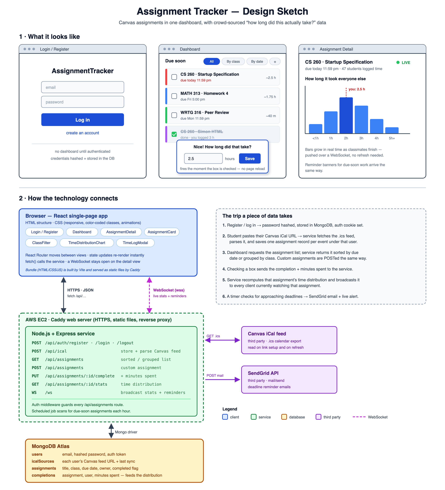

Sign in
Once you are signed in, your assignments load automatically from your Canvas calendar feed. You can also add your own assignments for things Canvas does not track.
What you get
- All of your assignments pulled from Canvas into one list
- Sort by class, due date, or how much is left to do
- Check an assignment off and log how long it actually took
- See how long the assignment took everyone else before you start
- Email reminders as a deadline gets close
